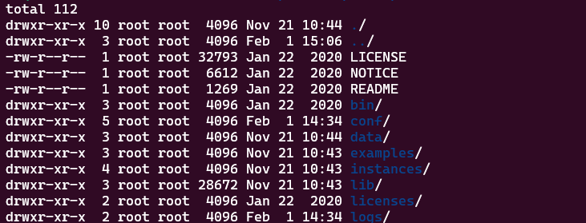
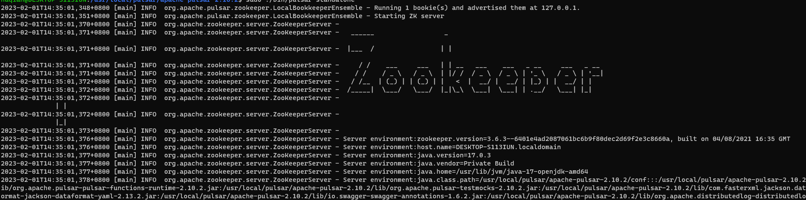
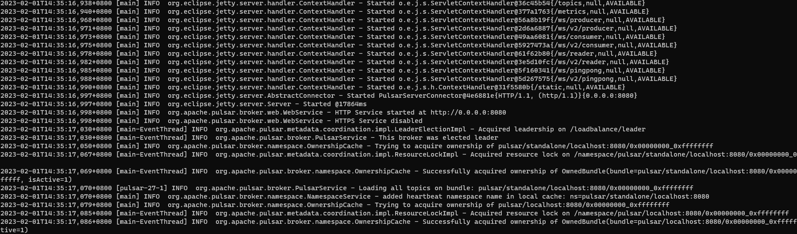
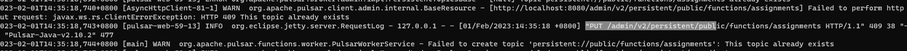
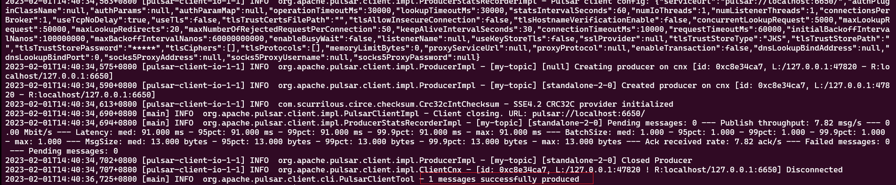
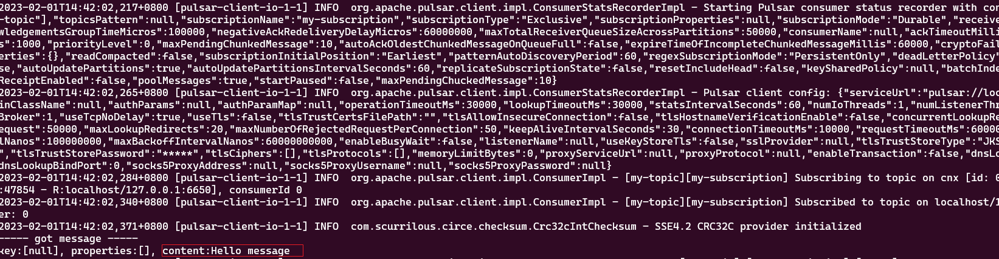

TreeviewCopyright © aleen42 all right reserved, powered by aleen42
Pulsar 本地安装与运行Pulsar集群
对于本地开发和测试，您可以在机器上以独立模式运行Pulsar。独立模式在单个Java虚拟机(JVM)进程中运行所有组件。
安装
jdk版本映射关系
在安装pulsar之前，我们需要了解pulsar相关对应的java的版本信息，如下：
pulsar运行时Java版本推荐
- pulsar 版本 > 2.10 and master 分支：
| Pulsar组件 | Java版本 |
|---|---|
| Broker | 17 |
| Functions / IO | 17 |
| CLI | 17 |
| Java Client | 8 or 11 or 17 |
- 2.8 <= pulsar 版本 <= 2.10：
| Pulsar组件 | Java版本 |
|---|---|
| Broker | 11 |
| Functions / IO | 11 |
| CLI | 8 or 11 |
| Java Client | 8 or 11 |
- pulsar 版本 < 2.8：
| Pulsar组件 | Java版本 |
|---|---|
| Broker | 8 or 11 |
| Functions / IO | 8 or 11 |
| CLI | 8 or 11 |
| Java Client | 8 or 11 |
下载
/usr/local/pulsar$ wget https://archive.apache.org/dist/pulsar/pulsar-2.10.2/apache-pulsar-2.10.2-bin.tar.gz
解压
/usr/local/pulsar$ tar -xvfz apache-pulsar-2.10.2-bin.tar.gz
解压目录介绍
解压出来的目录结构如下： 
- bin：pulsar入口点脚本，以及许多其他命令行工具
- conf：配置文件，包括broker.conf,zookeeper.conf等
- lib：Pulsar使用的jar包
- examples：pulsar函数示例
- instances：Artifacts for Pulsar Functions
- data：数据目录
logs：日志目录
启动
/usr/local/pulsar/apache-pulsar-2.10.2$ sudo ./bin/pulsar standalone 
提示：如果我们想使用后台进程去启动pulsar的话，可以使用bin/pulsar-daemon start standalone命令。当plusar集群启动的完成之后，会默认 创建一个public/default命名空间，此名称空间用于开发目的，所有Pulsar主题都在名称空间中管理。
创建topic
/usr/local/pulsar/apache-pulsar-2.10.2$ sudo ./bin/pulsar-admin topics create persistent://public/default/my-topic
如果topic已经存在，会报如下错误： 
发送消息
可以使用pulsar命令行工具将消息写入主题。在实践中，您将在应用程序代码中使用Producer API，或Pulsar IO
连接器将数据从其他系统拉到Pulsar。
/usr/local/pulsar/apache-pulsar-2.10.2$ sudo ./bin/pulsar-client produce my-topic --messages 'Hello message'

消费消息
在实践中，您将在应用程序代码中使用Consumer API，或者使用Pulsar IO连接器从Pulsar读取数据以推送到其他系统。
/usr/local/pulsar/apache-pulsar-2.10.2$ sudo ./bin/pulsar-client consume my-topic -s 'my-subscription' -p Earliest -n 0
 Earliest意味着从最早的未使用的消息进行消费。-n:配置要消耗的消息数量，0表示永远消耗.
停止
可以使用Ctrl+C终止相关进程